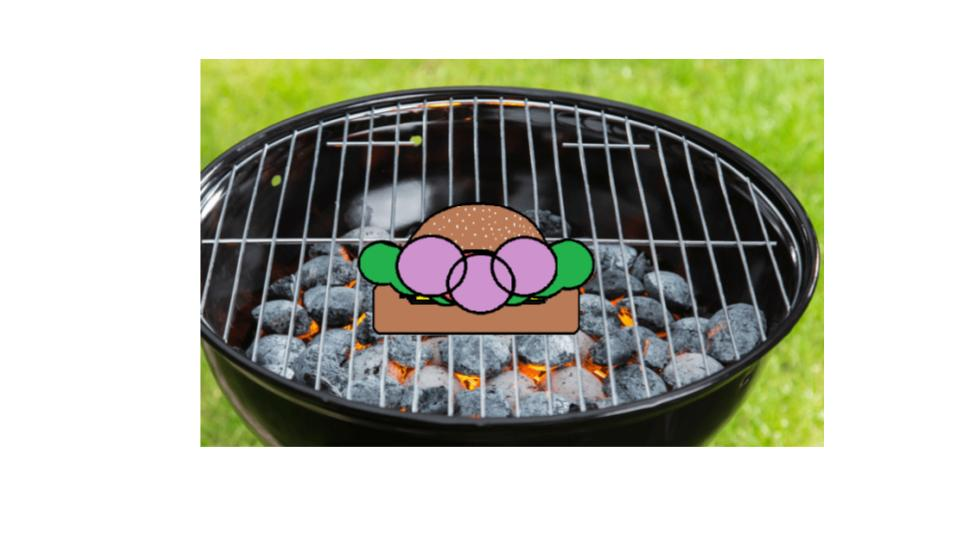

This is my Portfolio Page!

Project 1.1.9
This is a BBQ burger, where we coded specific commands so that each person can decide what to have on their burger. They could decide if they want cheese, lettuce, tomatoes, onions, etc. on their burger and are able to customize their toppings on the burger how ever they like.

Turtle Race!

This is 2 player game Turtle Race where we assign certain keys to certain players and the two players race each other to determine the winner of the race. A leaderboad will then pop up indicating the victor of the race.
Cat Run
This is Cat Run where you must pass obstacles to reach the finish line.
Modified bits in pictures.

Use data files to create graphs.

Using netlogo do remix of illusions.